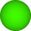
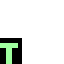
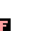

MutationPlanet is an exploration of artificial life and natural selection. It doesn't fit neatly into any well-defined category, but it has been described as "a sandbox for evolution." This simulation allows you to see how mutation and natural selection work together to produce adaptive behavior, witness speciation in action (the evolution of distinct species from a common ancestor), retrace the history of each genome through every mutation back to the original progenitor, explore how changing environments affect evolution, and even pit your own designed sequences against the products of natural selection.
The simulated organisms (aka "critters") in this simulation are loosely modelled asexually reproducing organisms such as bacteria. They gain energy either by photosynthesizing energy from the "Sun" or by eating other critters. They have behaviors and physical traits which are governed by their genetic code. If they gain enough energy, they will have an offspring that will inherit the parents genetic code with a possible mutation. Mutations are usually harmless or harmful, but they may occasionally result in traits that help the new organism to survive, reproduce and pass those traits on. This raises an interesting question: is mutation a bug or a feature?
Except conceptually, the genetic code used by the critters is nothing like DNA either in structure or in how it's interpreted. Instead, I've tried to create a simulation with with ground rules that are fairly simple, not too contrived, and that produce interesting results in a short amount of time. While I designed the simulation and created the rules, including the genetic "alphabet", the genetic sequences that arise are predominate are selected for by the processes of mutation and Darwinian evolution.
Initially you will see a bunch of green dots on a sphere. The sphere is the "planet" on which the critters live, and the green dots are simple critters. You can rotate the sphere by touching and dragging it, and can zoom in and out using a pinch gesture.
The Speed: slider in the upper-left allows you to control the speed of the simulation, from 0 (stopped) to 10 (run as fast as possible). Use the slider to increase the speed and the green dots will spread out to cover most of the planet. The "Top Species" list on the right displays all the unique genomes (a "species") of all currently living critters along with their population, in order of most populous to least. The green dots are actually very simple critters that gain energy through virtual photosynthesis.
There are two blue circles that represent the poles of the sphere. Critters move more slowly as they near the poles, due to the cold. This provides a simple variation in habitat and also allows you to view critters operating more slowly without adjusting the speed slider.
Because of hardware contraints, there are limits to the number and complexity of critters that can inhabit the world. The population will never exceed 20,000 critters and the frame rate cannot go below 15 frames per second. Competition between critters will typically keep the numbers below the top thresholds, but if there's ever a population boom that exceeds the limits of this simulation, a disaster will occur and 75% of all critters will be destroyed at random. When this happens, the sphere will flash red..
The planet is divided into two equal halves (marked by a dotted blue line). One side is "slower" than the other - that is, any critter that has its head over the dotted blue line into the "slow" half will operate at a much slower speed than the other half. This is partly to simulate different environments (you could think of this as a colder area), partly to allow viewing behaviors more easily and partly to avoid mass extinctions.
You've already met one of the simplest critters, which is a single cell containing the Photosynthesize instruction. These the green dots that you've already seen.
Biological organisms use a long-chain molecule known as DNA, a chemical compound that contains the genetic instructions needed to develop and direct the activities of every organism. DNA molecules are made of two twisting, paired strands. Each strand is made of four chemical units, called nucleotide bases. The bases are adenine (A), thymine (T), guanine (G) and cytosine (C). Read more about it here.
Critters have a much shorter and simplified genetic code. Their code is a sequence of from one to fifteen instructions. Each instruction in the code creates a cell in the critter that "contains" that instruction. In the case of the "Photosynthesis" instruction, this creates a special photosynthesis cell which is vulnerable to attack. The possible instructions are shown below:
|  | Photosynthesize | Gains energy every turn, but is subject to being eaten. |
| Move & eat | Moves the critter in the direction its head is oriented. If it moves onto another critter's Photosynthesize cell, it will gain energy from that critter (and be blocked from moving until that critter moves away or dies). | |
| Move | This is similar to Move & Eat, but it uses less energy and will not eat a Photosynthesize cell. | |
| Slight left | Turns the critter's head 30 degrees to the left, affecting subsequent look and move instructions. | |
| Slight right | Turns the critter's head 30 degrees to the right. | |
| Hard left | Turns the critter's head 30 degrees to the right. | |
| Hard right | Turns the critter's head 30 degrees to the left. | |
| Hyper | Switches a critter into a mode in which its instructions are executed more quickly (and causing it to expend more energy). This mode is reset after executing its last instruction. | |
| Sleep | Puts a critter to sleep for a period of time. While sleeping it uses less energy. | |
| ? Food | Sets the critter's condition to True if its head is facing the Photosynthesize cell of another critter (in a direct line, with no intervening obstacles, and less than Vision Distance away); otherwise the condition is set to False. | |
| ? Blocked | Sets the critter's condition to True if the last time it attempted to move it was successful, or False if the last time it attempted to move it was blocked. | |
| ? Overlap | Sets the critter's condition to True if any of its cells are overlapping, otherwise False. | |
| ? Preyed on | Sets the critter's condition to True if another critter executed a Move & Eat to prey on a Photosyntehsize cell of this critter, otherwise False. |
Critters have a simple condition that can be set to True or False. It is initially False and will only change if set to True by one of instructions described above (note that all the instructions that set the condition begin with ?). With the exception of the Photosynthesize instruction, every instruction can set to execute conditionally, indicated by a T or F in the bottom left of the instruction. For example:
| Always turn. | |
|  | Turn only if the condition is True. |
|  | Turn only if the condition is False. |
Random combinations of instructions can produce adaptive behavior: for example, a critter can first look ahead to see if it is facing food and turn only if the condition (set by the "? Food" instuction) is False. Conditional instructions may themselves execute conditionally.
A complete list of all critter attributes is shown below:
| Genome | A sequence of one to fifteen instructions, each of which (except the Photosynthesize instruction) may execute conditionally. |
| Energy | The critter's current energy. If it reaches zero, the critter dies. If it exceeds a threshhold (discussed later), it will reproduce. |
| Head orientation | A critter's first cell is considered its head. It can point in any direction (newly spawned critters will have their heads oriented in a random direction). The Turn instructions will rotate the head relative to its current orientation. |
| Hyper mode | When a critter is in hyper mode, it executes its instructions more quickly, using more energy in the process. |
| Sleep mode | When critter is asleep, it does not execute any instruction and uses much less energy. |
| Current instruction | A critter has a current instruction, which is initially the first instruction. Every turn when a critter is not sleeping, it executes the current instruction (skipping it if it has an unmet condition) and advances to the next instruction. After executing the last instruction, hyper mode is switched off and the current instruction is reset to the first instruction. |
Every turn, each critter is given the opportunity to execute its next instruction. While sleeping, it will not execute any instructions and if in hyper mode, it will execute several instructions in a single turn. A critter gains energy every turn for every non-overlapped Photosynthesize cell, even if currently sleeping. Critters also lose one point of energy every turn, although successful critters will on average gain more energy through photosynthesizing and/or eating than they lose.
Although every turn costs a critter a certain amount of energy, the two Move instructions cost an additional amount of energy. If a critter's energy ever goes to zero, it immediately dies and each of its segments becomes inactive Photosynthesize cells. These will become active after a certain number of turns and begin to reproduce.
Critters cannot move over other critters. They can, however, move over themselves if the Advanced setting "Allow self overlap" is turned on.
When a critter accumulates enough energy to reproduce, it produces an offspring with either an exact copy of its genome or a copy containing a single mutation. If the parent critter has never moved (as in the case of a critter with a single Photosynthesize instuction), the offspring will be placed a small random distance away. If the parent critter has moved, the offspring will be placed immediately behind the critter's last instruction. Reproduction costs energy (if you have children you will know this), so the parent's energy is halved and the offspring recieves the other half of the parent's energy.
The energy threshhold for reproduction is determined by multiplying a critter's number of segments by an advanced setting ("Spawn energy"). This means that a critter with two segments needs twice the energy to reproduce as a critter with one segment. It also means that it will have twice the energy after it reproduces as the single segmented critter.
A newly spawned critter will have all its segments in the same location. The segments of critters that have more than one segment are considered "overlapped". Overlapped cells do not photosynthesize. Without this rule, the world would be quickly overrun with critters that were nothing but a long sequence of Photosynthesize cells.
If you zoom into the world above 200% magnfication, the critters are shown with additional information. Critters that contain a Move or Move & Eat instruction will have a blue arrow on their head segment to indicate their orientation. The active segment will be shown outlined in green if the critter's condition is True, or red if the critter's condition is False. It may be helpful at this point to turn off "Color-code species" (in the lower-right of the screen). When this is on, unique genome sequences are assigned colors at random to make it easier to visualize different species populations, and all segments of critters belonging to that genome are drawn in that color (except for their Photosynthesize cells, which are always green). When "Color-code species" is off, cells are drawn with their instructions.
As a critter's energy approaches zero, it is displayed as more and more transparent until it literally fades away and becomes food. This allows you to quickly gauges a critter's health.
The "Follow top critter" feature is extremely helpful for visualizing the life of a critter. When you check this, the simulation will follow the movements of the critter with the highest energy at the time this box was checked. It will continue to follow the same critter until you either uncheck the box or the critter being followed dies. The checkbox will then automatically uncheck itself.
You may want to also slow down the speed of the simulation to gain a better understanding of what critters are doing.
Here are some of the things you can do in MutationPlanet:
| Cell size | The size of all segments of all critters. A smaller size means there can be a higher population density. |
| Speed | Allows adjusting the speed of the simulation from 0 (stopped) to 10 (running as fast as possible). |
| Mutation | Adjusts the probability that an offspring of a critter will have a single mutation (an instruction randomly added, removed or changed) in its genome. |
| Barriers | Use to select various barriers that the critters cannot move over. |
| Advanced setings | |
| Spawn energy | The amount of energy, per segment, that a critter needs to have an offspring. |
| Sprout turns | When a critter dies, and its segments become dormant Photosynthesize cells, the number of turns before these dormant cells become active Photosynthesize critters. |
| Photosynthesis | The amount of energy produced by each Photosynthesize cell. |
| Move | The additional energy cost of executing a Move instruction. |
| Move & Eat | The additional energy cost of executing a Move & Eat instruction |
| Mouth size | Controls how close (in cell size units) the head of a critter executing a Move & Eat instruction needs to be to a Photosynthesize cell of another critter to eat it. |
| Move delay | The additional number of turns after executing a Move or Move & Eat instructions before a critter executes the next instruction. |
| Bite strength | When one critter executes a Move & Eat instruction to move onto a Photosynthesize segment of another critter, how much energy is subtracted from the critter containing the Photosynthesize segment. |
| Digestion | The percentage of the energy subtracted from the bitten critter that the biting critter receives. |
| Allow self overlap | When on, critters are allowed to move over their own cells. As noted previously, overlapping cells cannot photosynthesize. |
| Starve => food | Controls whether critters who starve to death become dormant Photosynthesize cells. |
| Allow cannibalism | If off, critters who share the same genome will not eat each other, and not see each others' Photosynthesize segments as food. |
As humans have done for millennia, you can affect the evolution of critters by changing their environment.
The unit of time in MutationPlanet is a "turn". The amount of time a "turn" in Mutation
A complete list of all attributes of critters is shown below:
I later discovered that there was a whole field of artificial life and evolutionary simulations, and that my work was extremely simple in comparison. An evolutionary simulation created by Karl Sims in 1994 is still amazing to watch today. The challenge is that the more complex the simulations are, the more difficult it is to understand or explain how they work. I wanted to create a simulation of artificial life that was true to basic biological principles, relatively easy to understand, and just rich enough to allow adaptive behavior to occur through the process of natural selection. A goal of mine was to keep the format of the critter's genetic code simple enough so it could be eaily read and even written by a human.
| Turn | The basic unit of time in MutationPlanet is a "turn". The amount of time a "turn" in Mutation. |